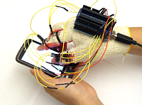
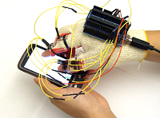
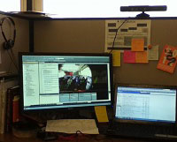

Research/Work Experience
2011 - Current, Research Assistant, University of Houston, Houston, Texas, USA
- Devise and program data visualization method User Portrait to condense Affective User Data. (JS, High Charts)
- Design and implement software interfaces for large scale human studies in jQuery and JavaScript with Highcharts.js
- Design and implement an iPhone app for scholar careers in Objective-C and PHP
- Build overall system architecture of scholarplot.com
Visualize your research accomplishments or those of others at a glance! This application plots a scholar's journal publications in a clear and compact way. Publications are listed chronologically against the impact factors of the corresponding journals. The area of each disk representing the publication is analogous to the number of the citations this publication has generated. Publications denoted in green disks stand below the scholar’s h-index while publications denoted in orange disks stand above the scholar’s h-index.
Facebook App Page - http://www.facebook.com/scholarplot
Support Page - http://www.cpl.uh.edu/projects/scholar-plot
- Design and implement web software visualization of human body signals (heart rate, breath rate and EDA)
- http://www.cpl.uh.edu/projects/stress-studies/css/
- Miscellaneous works for iPhone
- Implemented an Android app for mobile authentication using touchscreen gestures (Java, Android)

 

- Implemented an algorithm and an application detecting Human motions with Kinect SDK (Microsoft .NET)
